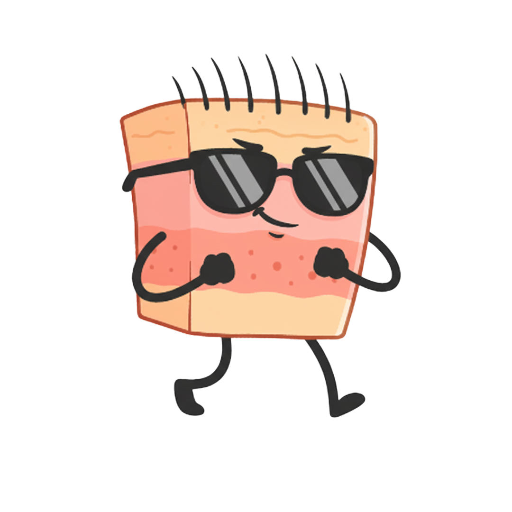
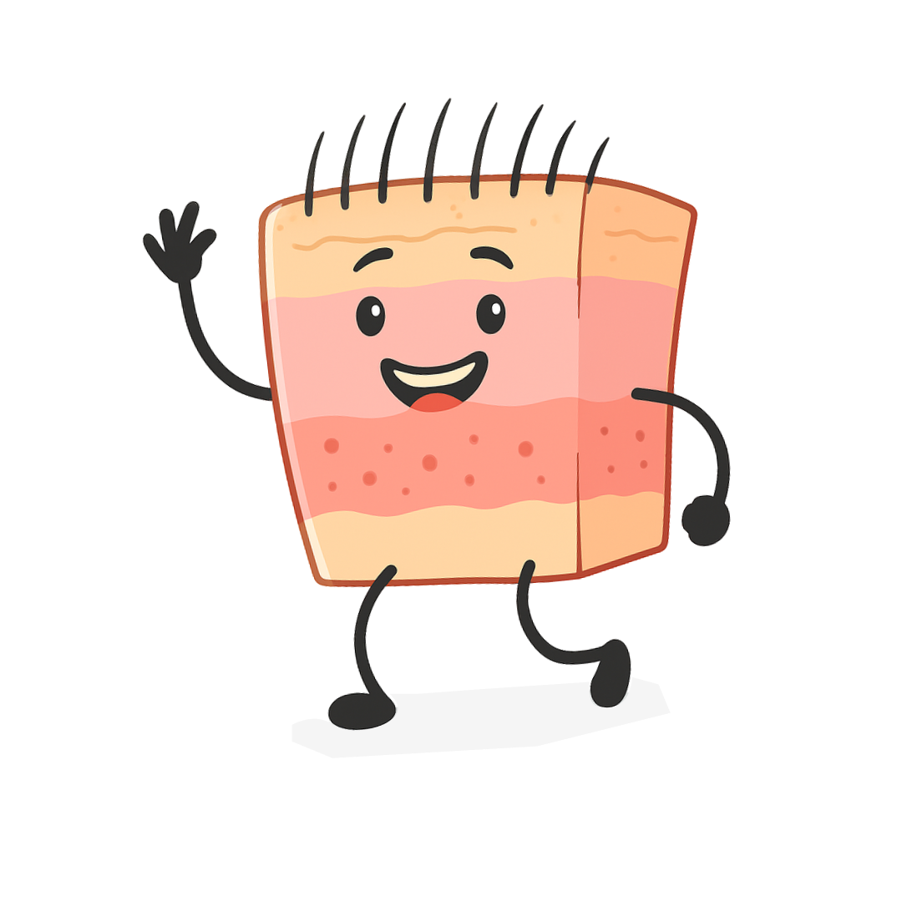
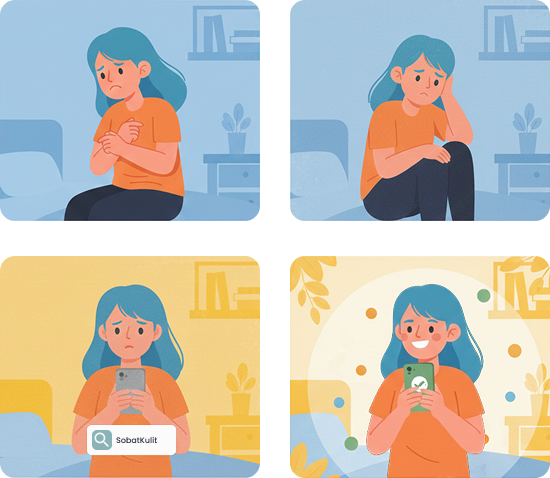
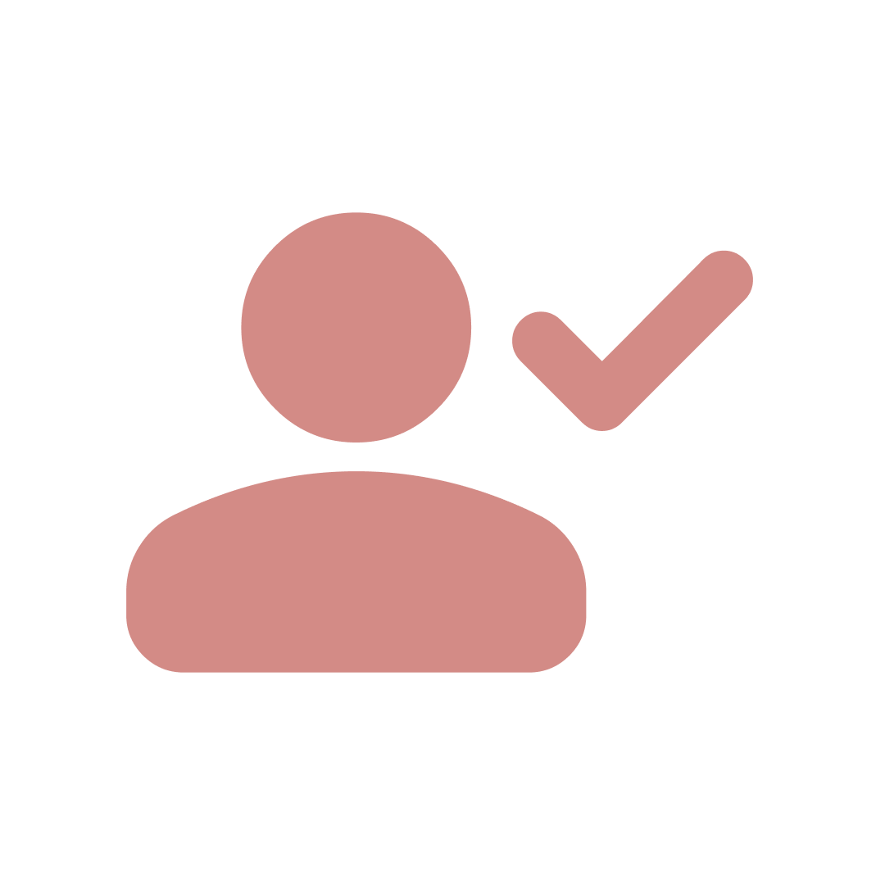

Didukung Data Dermatologi
Jawaban dihasilkan dari model AI yang dilatih menggunakan referensi ahli dermatologi serta jurnal ilmiah terpercaya.
Yuk, ngobrol santai dengan SobatKulit. Kami bantu cari tahu kondisi kulitmu dan berikan jawaban berdasarkan referensi ahli untuk mendukung kesehatan kulitmu.
Mulai Kenali Kulitmu


SobatKulit hadir sebagai teman konsultasi berbasis AI yang membantu mengenali jenis kulitmu sebagai langkah awal perawatan. Jawaban yang diberikan didukung oleh referensi ahli dermatologi dan jurnal terpercaya.
Jawaban dihasilkan dari model AI yang dilatih menggunakan referensi ahli dermatologi serta jurnal ilmiah terpercaya.

Setiap jawaban disesuaikan dengan kondisi dan kebutuhan kulitmu berdasarkan informasi yang kamu berikan.
SobatKulit tidak menyimpan riwayat percakapan, sehingga semua konsultasi tetap aman dan bersifat pribadi.
*SobatKulit tidak memberikan diagnosis. Untuk kasus yang memerlukan penanganan lanjutan, disarankan berkonsultasi ke profesional.
Dapatkan pengalaman konsultasi kulit yang personal dan informatif. SobatKulit membantu kamu memahami kondisi dan kebutuhan kulit, memberikan informasi perawatan yang relevan, dan mendukungmu mengambil keputusan yang tepat untuk menjaga kesehatan kulit.
Mulai perjalananmu menuju kulit yang lebih sehat dan terawat bersama chatbot interaktif SobatKulit.
SobatKulit adalah platform konsultasi kulit berbasis AI yang membantu mengenali kondisi dan kebutuhan kulit serta memberikan saran perawatan berdasarkan referensi ahli.
Ya. Data dan referensi yang digunakan telah diverifikasi oleh dokter dermatologis dan sumber ilmiah terpercaya.
Tidak. SobatKulit memberikan saran dan informasi pendidikan; untuk diagnosis atau perawatan lanjutan, silakan kunjungi profesional kesehatan.
Ya. SobatKulit dirancang untuk menjaga privasi: data pengguna tidak disimpan untuk publikasi, dan komunikasi bersifat privat.
Tersedia layanan gratis dan fitur berbayar. Untuk detail paket dan manfaatnya, silakan lihat halaman pricing atau beri tahu kami di kontak.